01
CFD Simulation Engineer
Model industrial dust collectors, baghouses and pipelines using ANSYS Fluent, ANSYS Rocky and OpenFOAM. Work includes DPM gas–solid particle transport, CAD geometry and scan-to-CAD preparation.
Methods & tools →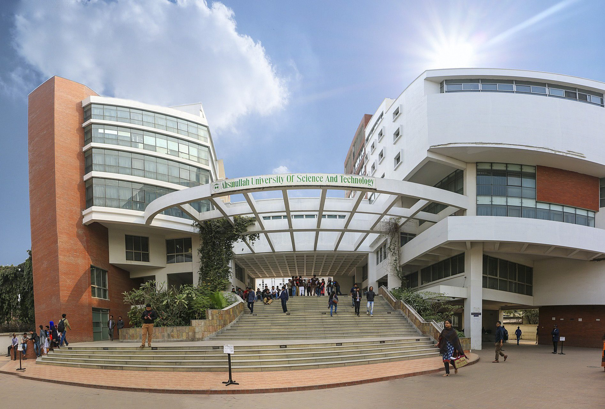
CFD Simulation Engineer · MACPROTEC, USA
MECHANICAL ENGINEERING · COMPUTATIONAL MODELLING
I’m a Mechanical Engineering graduate of Ahsanullah University of Science and Technology and a remote CFD Simulation Engineer at MACPROTEC. I study multiphase flow and thermal energy storage, and model gas–solid particle transport for industrial systems.
Liquid-fraction and temperature histories compared with published benchmarks.
≈3%ANSYS Fluent results compared with Rafi et al.
≈8%OpenFOAM validation across Weber numbers 54–128.
Results from the studies described in my CV; each figure refers to its own benchmark and conditions. Explore methods and limitations →
Explore the models, validation studies and experiments behind my work.
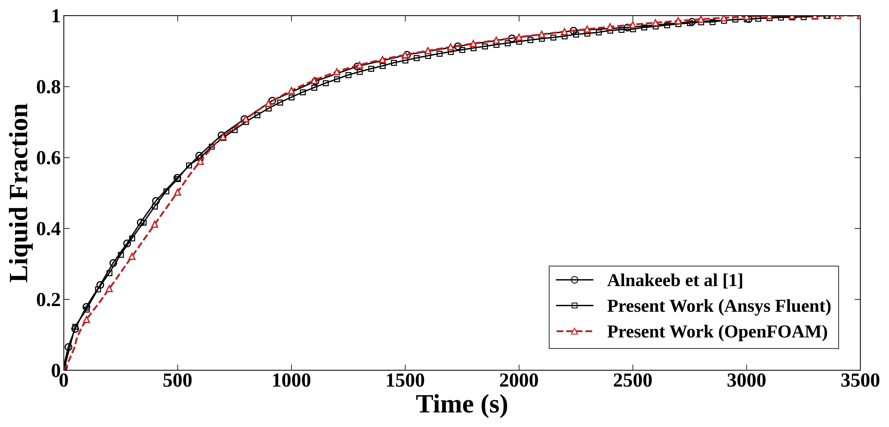
Liquid-fraction histories · benchmark comparison

Apparent heat-capacity modelling · thermal storage
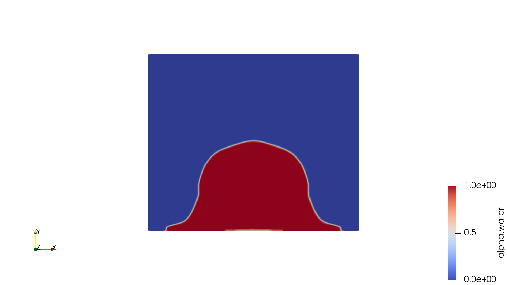
VOF validation · Fluent & OpenFOAM
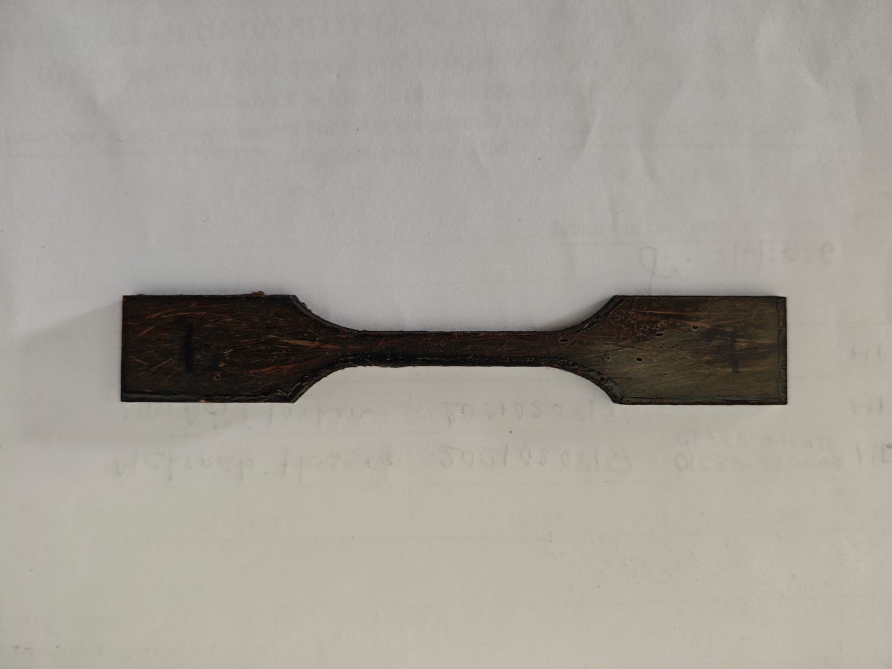
Experimental thesis · 25.5 ± 2 MPa tensile strength
Professional work, academic foundations and ongoing research.
Model industrial dust collectors, baghouses and pipelines using ANSYS Fluent, ANSYS Rocky and OpenFOAM. Work includes DPM gas–solid particle transport, CAD geometry and scan-to-CAD preparation.
Methods & tools →Research interests in thermal sciences and fluid mechanics. Undergraduate thesis on water-lily natural fibre and epoxy composites.
Education details →Validating thermal energy storage models, investigating PCM-loaded building materials, and modelling droplet deformation and freezing.
Explore research →I graduated in Mechanical Engineering from Ahsanullah University of Science and Technology in July 2026 and have worked remotely as a CFD Simulation Engineer with MACPROTEC, USA, since July 2026.
At MACPROTEC, I model gas–solid particle transport in dust collectors, baghouses and pipelines using ANSYS Fluent (DPM), ANSYS Rocky and OpenFOAM, supported by geometry preparation and scan-to-CAD workflows. My research focuses on phase-change thermal storage, droplet deformation, impact and freezing.
I am open to graduate study and research collaboration in fluid dynamics, thermal sciences and computational modelling. Get in touch to discuss research interests and potential projects.
Interested in fluid dynamics, thermal sciences or computational modelling?
Get in touch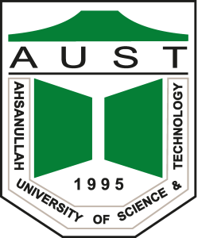
Bachelor of Science in Mechanical Engineering
Tejgaon Industrial Area, Dhaka 1208, Bangladesh
Higher Secondary Certificate
Science · GPA 5.00 / 5.00
Secondary School Certificate
Science · GPA 5.00 / 5.00
Coursework and training projects in machine design, instrumentation and manufacturing.
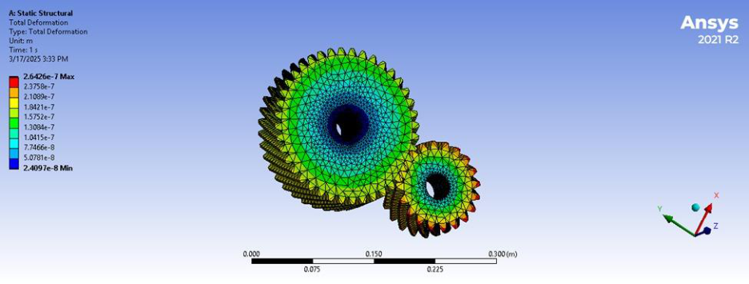
ME 3201 Machine Design · ANSYS Workbench 2021 R2, Autodesk Inventor, SolidWorks
Contribution: Designed and analysed the gear train driving a rotary screw compressor, from ratio selection and tooth geometry through to stress checks on the loaded members.
Read project report →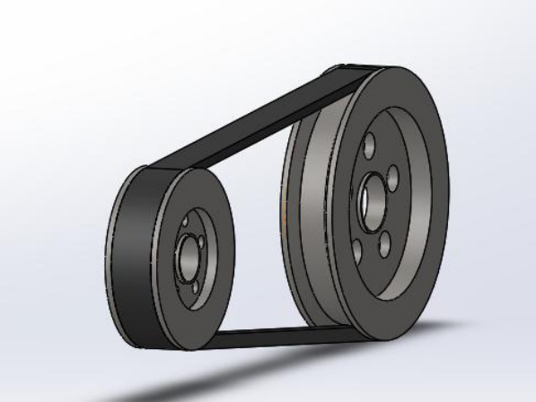
ME 3202 Machine Design Sessional · ANSYS Workbench 2021 R2, SolidWorks
Contribution: Sized a belt drive for a starter motor, covering pulley geometry, belt selection, tension and power transmission, with CAD and FEA support.
With Jubaida Hossain Basoti, Eyaman Islam and Rakibul Hasan Shawon. Supervised by Mr. Nasim Mia, Lecturer, Department of Mechanical and Production Engineering.
Read project report →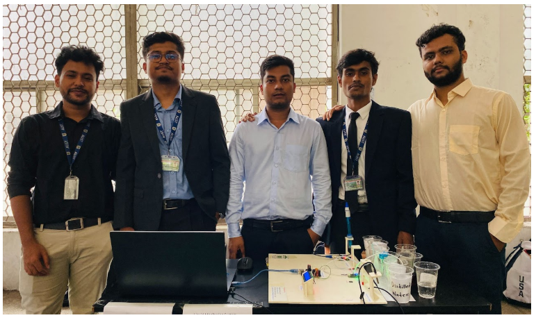
ME 3110 Instrumentation & Measurement Sessional · Arduino IDE, SolidWorks
Contribution: Built an Arduino Uno system to monitor pH, turbidity, TDS and temperature for water-quality assessment. The build handled automated data collection, wireless monitoring and on-screen results.
Outcome: First place by audience choice, Fall 2023. View award & certificate →
Read project report →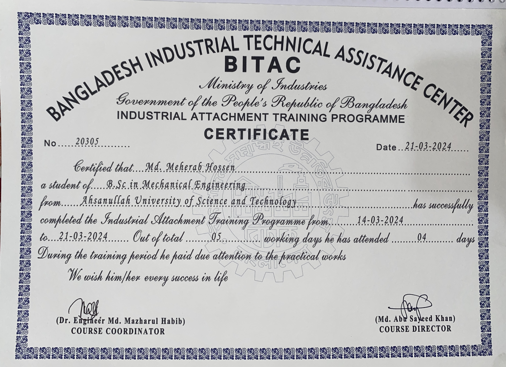
Attachment Training Programme · Bangladesh Industrial Technical Assistance Centre
Contribution: Hands-on training in heat treatment, CNC machining, lathe operation, moulding and casting, which built up a working picture of both traditional and advanced manufacturing processes. Served as team leader for the programme.
Read project report →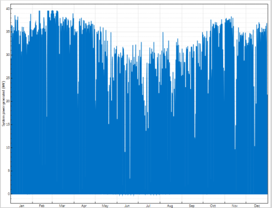
ME 4201 Power Plant Engineering · NREL System Advisor Model, Global Solar Atlas, SREDA Net Metering Calculator
Contribution: Designed a ground-mounted 50 kWp solar plant for a mixed college, shop and household load in Brahmanbaria, from the hourly demand profile and solar resource assessment through to module and inverter sizing, string layout and grid interconnection. Annual yield and system losses were simulated in SAM; net metering savings, payback and avoided emissions were worked out against the SREDA 2025 guideline.
Read project report →Reported simulation: 76,733 kWh annual energy yield and an estimated 3.26-year payback under the report’s assumptions.
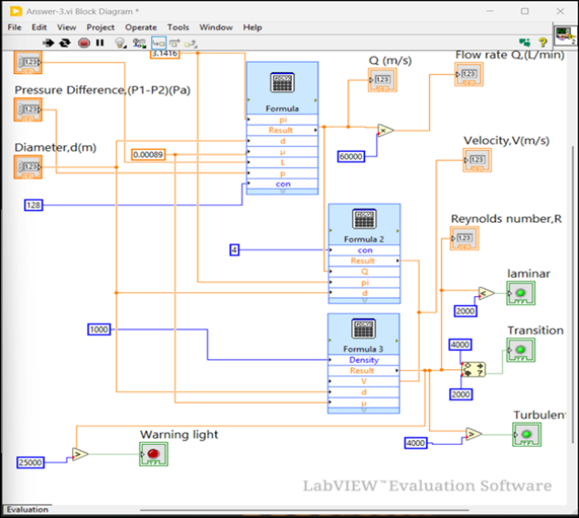
ME 4205 Mechatronics · LabVIEW
Contribution: Built one LabVIEW program for sensible heat exchange, vibration analysis with FFT and power spectral density, and Reynolds-number flow classification. The flow-rate estimate uses Hagen–Poiseuille and is valid only for fully developed laminar flow; a turbulent-flow estimate requires a different model.
Supervised by Dr. Qazi Talal, Assistant Professor, Department of Mechanical and Production Engineering.
Read project report →Aerodynamics · XFLR5 & MS Excel · CV project summary
Contribution: Computed lift and drag at Re = 2 × 106 over angles of attack from −5° to 24°. Investigated leading-edge radius, trailing-edge gap, camber and thickness.
Comparison: Validated the computed aerodynamic behaviour against Miley’s (1982) wind-tunnel dataset, as described in my CV.
View CV project summary →Numerical studies in thermal energy storage, building energy and multiphase heat transfer using ANSYS Fluent and OpenFOAM, alongside experimental work on natural-fibre composites. The numerical studies include model validation against published research.
Methods, contributions and public evidence
Research interests: Multiphase flow, droplet impact and heat transfer, phase-change thermal energy storage, and benchmark-based numerical model validation.
Research evidence index ↗ · Portfolio source on GitHub ↗
Public materials currently include the portfolio source, validation figures and simulation videos. Runnable numerical cases are not yet deposited.
Thermal energy storage · Numerical validation
Research focus: The thermal behaviour of phase change materials during charging and discharging, and the effect of model parameters on heat transfer.
Building energy · Numerical validation
Research advisor: Prof. Dr. Dewan Hasan Ahmed · Ahsanullah University of Science and Technology
Research focus: The thermal response and energy-saving potential of plaster containing solid–solid phase change materials.
Multiphase flow · Work in progress · ANSYS Fluent & OpenFOAM
Research advisor: Nowroze Farhan Ifraj · PhD student, Mechanical Engineering, Virginia Tech
Research focus: Droplet deformation and heat transfer during free fall, impact and freezing.
Reported spread-ratio error: ≈3%. VOF validation performed in ANSYS Fluent; freezing investigations remain ongoing.
The falling-droplet cases of Rafi et al. [4] were reproduced in ANSYS Fluent to assess droplet deformation and collision behaviour. Figure 3 compares my numerical results with the published benchmark.
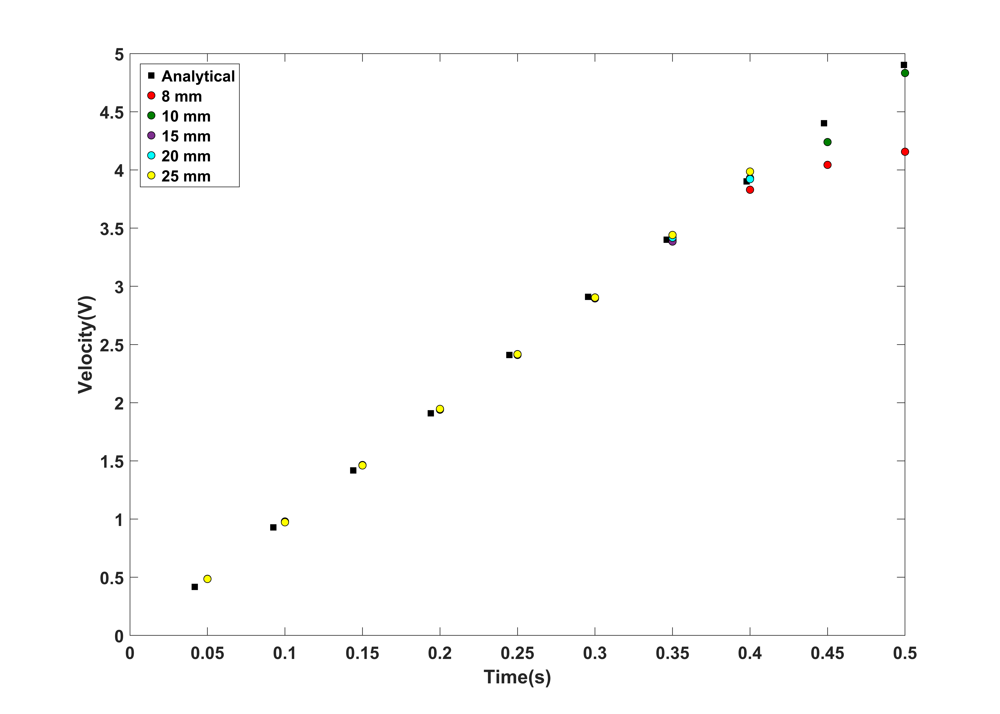
Reported comparison error: ≈8%. OpenFOAM droplet-pair validation over We = 54–128.
This figure compares my numerical results with Simultaneous impact of droplet pairs on solid surfaces by A. Goswami and Y. Hardalupas (2023) [5]. The reference study provides a benchmark for assessing droplet-pair impact and the resulting deformation on a solid surface.
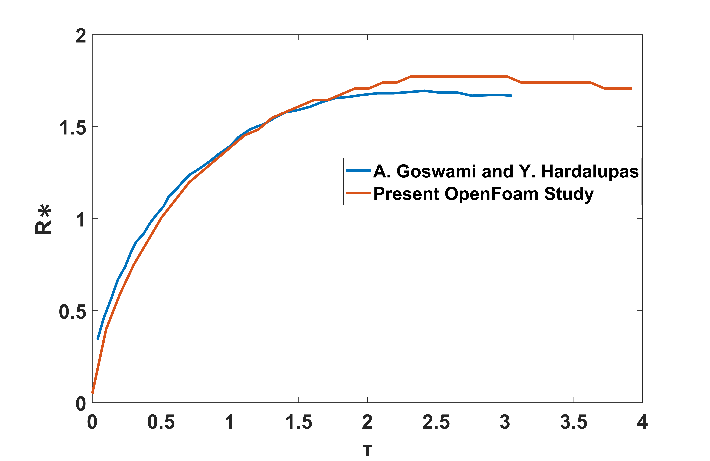
Additional simulation visualization · Impact & spreading
Selected frames from my droplet-impact simulation show the evolving water–air interface during impact and spreading. The colour scale represents water volume fraction, alpha.water: blue indicates 0 and red indicates 1.
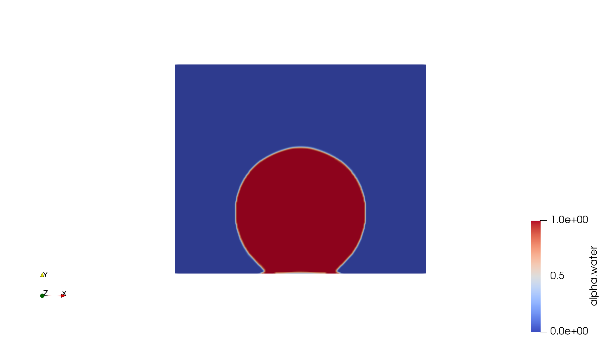
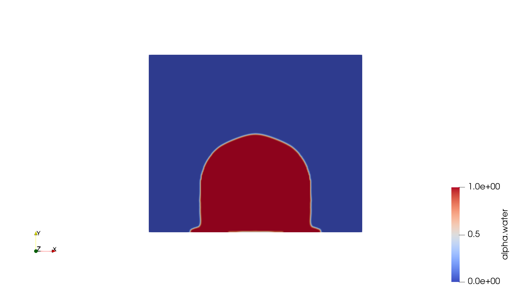
Frame numbers follow the supplied export sequence; no physical time interval is assigned. These images show fluid-interface evolution during impact.
Thermal energy storage · Numerical validation
Research focus: Establishing an axisymmetric melting benchmark for subsequent investigation of inclination-angle effects in PCM thermal storage.

Undergraduate thesis · Experimental research · Completed July 2026
Thesis: Experimental Characterization of Nymphaea Rubra (Water Lily) Natural Fiber and Its Epoxy Composite through Mechanical Analysis.
Ahsanullah University of Science and Technology · Supervisor: Dr. Fazle Rabbi · Three-member research team
Research focus: Water-lily natural fibre as a sustainable reinforcement for epoxy-based polymer composites.
Published studies used as benchmarks and background for the work above.
Eccentricity optimization of an inner flat-tube double-pipe latent-heat thermal energy storage unit
View on publisher siteNumerical investigation on consecutive charging and discharging of PCM with modified longitudinal fins in shell and tube thermal energy storage
View on publisher siteExperiments and Modeling of Solid–Solid Phase Change Material-Loaded Plaster to Enhance Building Energy Efficiency
View on publisher siteTwo-dimensional analogies to the deformation characteristics of a falling droplet and its collision
View on publisher siteSimultaneous impact of droplet pairs on solid surfaces
View on publisher siteImpacting-freezing dynamics of a supercooled water droplet on a cold surface: Rebound and adhesion
View on publisher siteAn experimental and numerical study on the effect of inclination angle of phase change materials thermal energy storage system
View on publisher siteSimulation animations, laboratory work and project demonstrations.
This video presents my numerical validation work based on Simultaneous impact of droplet pairs on solid surfaces by A. Goswami and Y. Hardalupas (2023), listed as reference [5]. The study serves as the benchmark for comparing droplet-impact behaviour in my simulation.
View reference [5]This video presents my numerical validation work based on Two-dimensional analogies to the deformation characteristics of a falling droplet and its collision by A. H. Rafi, M. R. Haque, and D. H. Ahmed (2022), listed as reference [4]. The study serves as a benchmark for examining droplet deformation and collision behaviour in my simulation.
View reference [4]Contributed to a journal manuscript under review and three conference submissions; documented numerical methods and benchmark comparisons.
View submission statuses →Completed an experimental thesis in a three-member research team and served as team leader during the BITAC industrial attachment programme.
Explore the thesis →Photographs from fibre testing, microscopy and composite-specimen preparation for my undergraduate thesis.
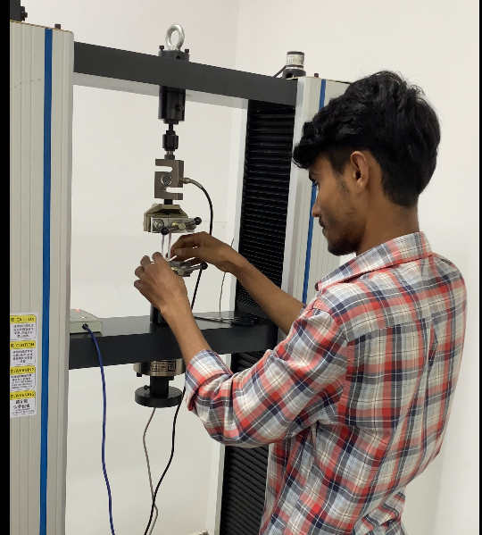
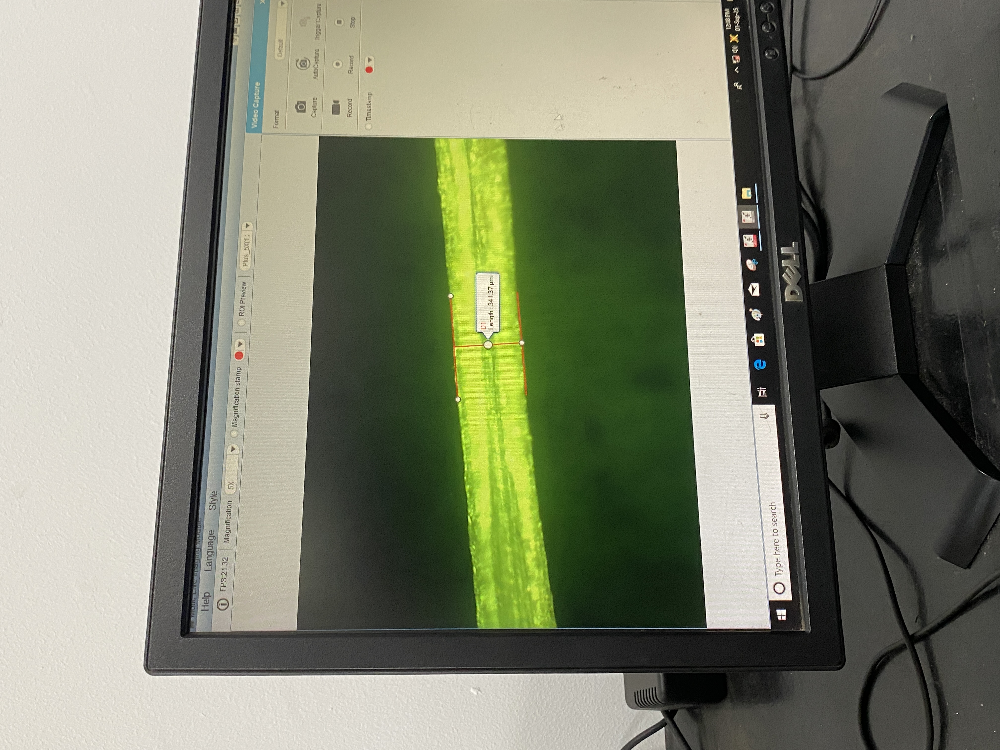
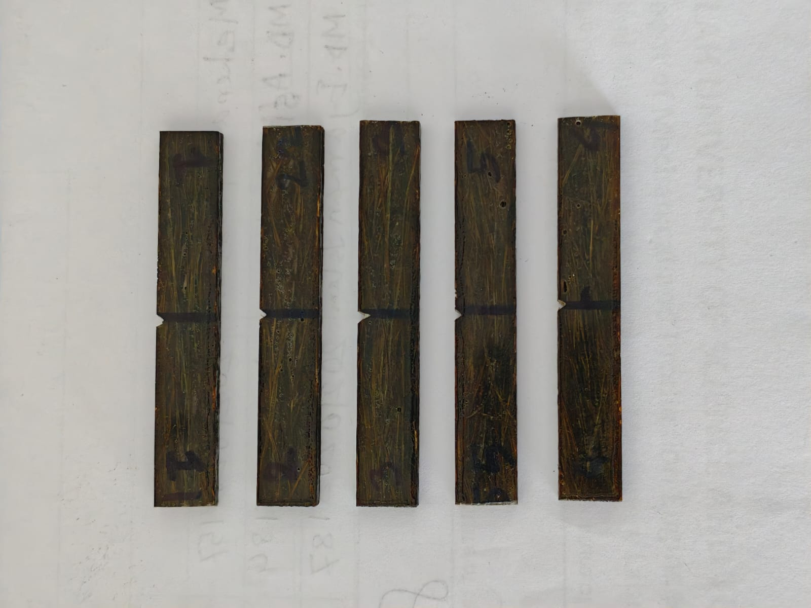
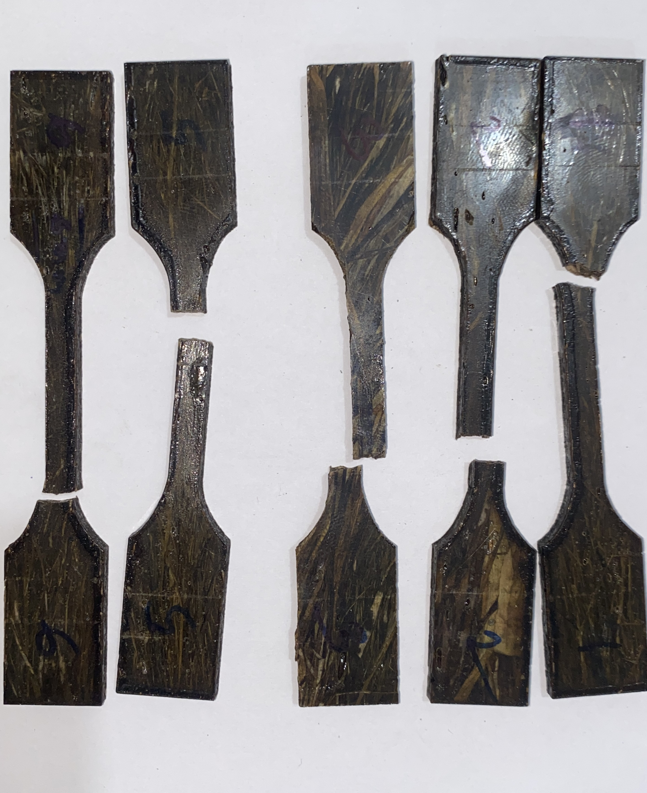
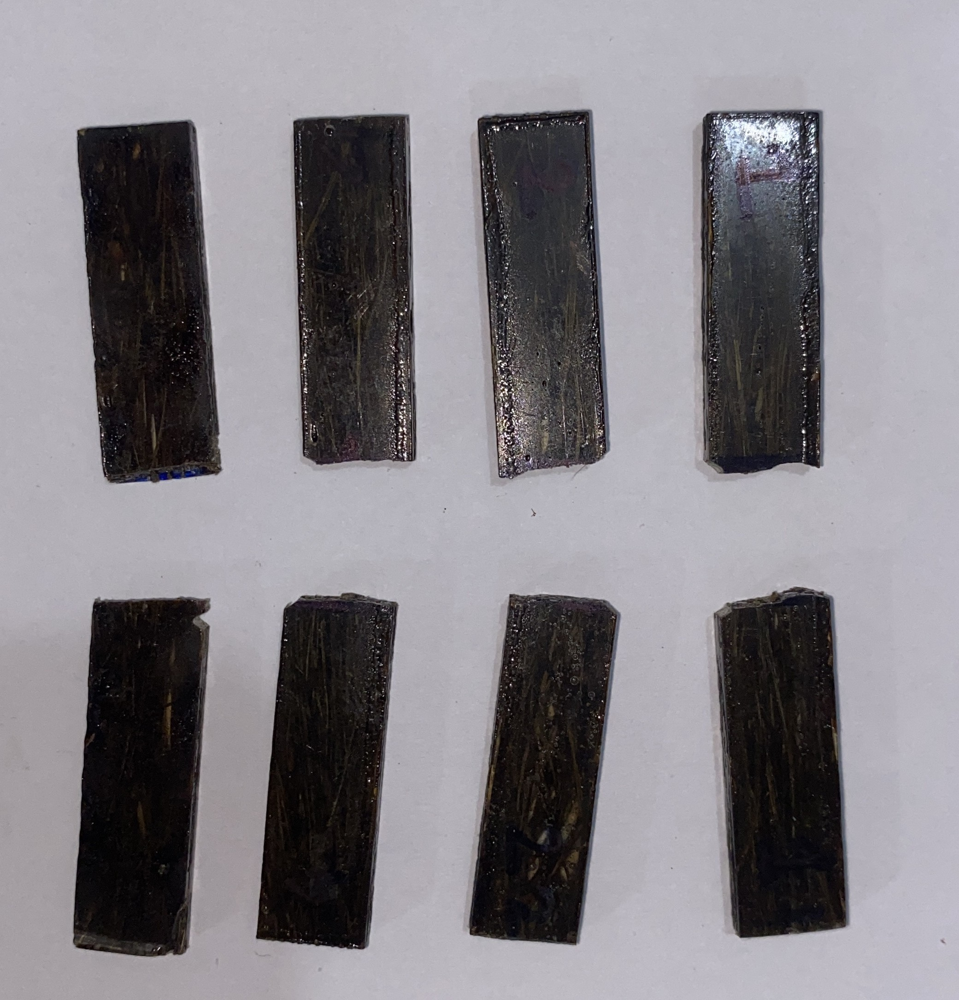
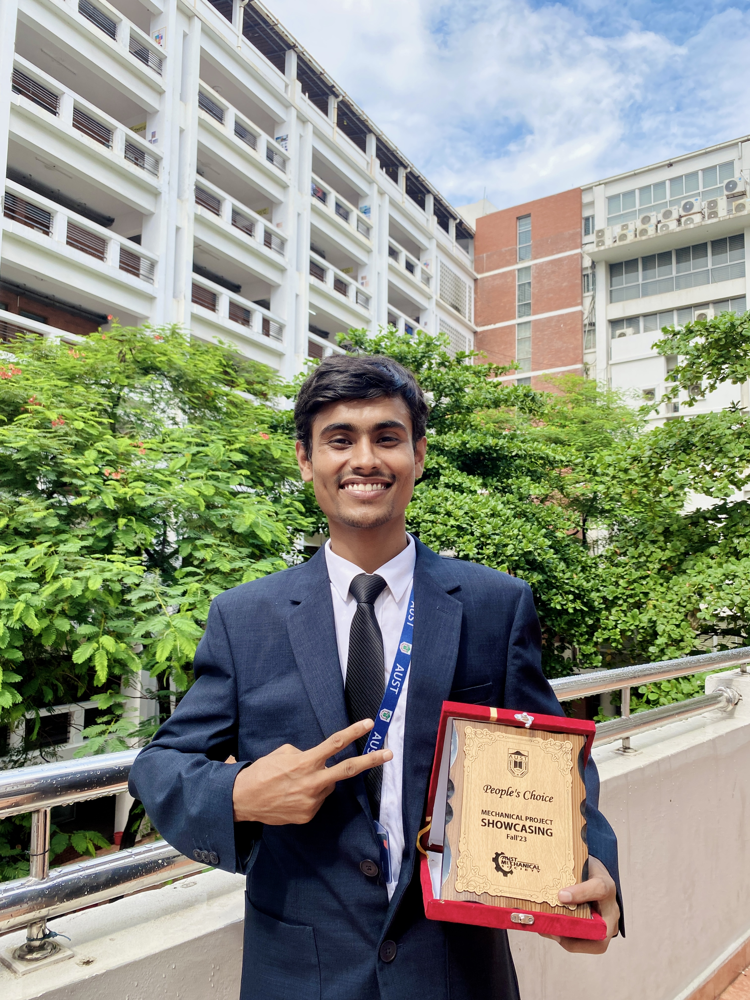
Mechanical Project Showcasing, Fall 2023 · Mechanical Society, Ahsanullah University of Science and Technology
Our team’s Arduino-based water-quality monitoring project received first place by audience choice at the Fall 2023 Mechanical Project Showcasing.
Explore the project →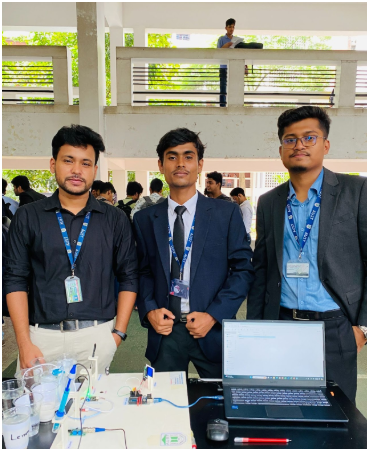
MathWorks Training Services · 26 December 2024
Hands-on practice in matrix manipulation, scripting, automation, data visualisation and control structures, which laid the groundwork for computational analysis and engineering simulation.
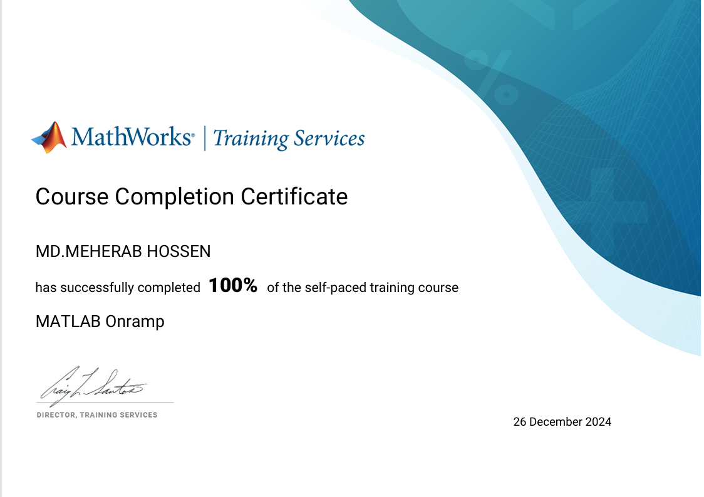
BITAC, Ministry of Industries, Government of Bangladesh · March 2024
Completed the attachment training programme as team leader, which sharpened technical and analytical skills alongside coordination and decision-making.
Journal and conference manuscripts, with author order, submission dates and current review status.
Numerical Investigation of Enhanced Thermal Energy Storage in Solid-Solid Phase Change Materials with New Fin Architecture for Shell-and-Tube Heat Exchanger Applications
Numerical Investigation of the Coupled Effect of Impact Angle and Ambient Rotor Downwash on Rain-Droplet Impact Regimes over UAV Surface
Effect of Pre-Impact Thermal History on the Impact and Freezing of Free-Falling Supercooled Droplets on UAV-Relevant Surfaces
Thermal Energy Storage Enhancement Using Alphabet-Inspired Fins in a Shell-and-Tube Heat Exchanger with Solid–Liquid PCM
Open to research collaboration and graduate study in fluid dynamics, thermal sciences and computational modelling.
Open your configured email app, or copy the address into your preferred service.
Md. Meherab Hossen · Mechanical Engineering & CFD
Download resume PDF Open PDF in a new tab ↗Download LaTeX source